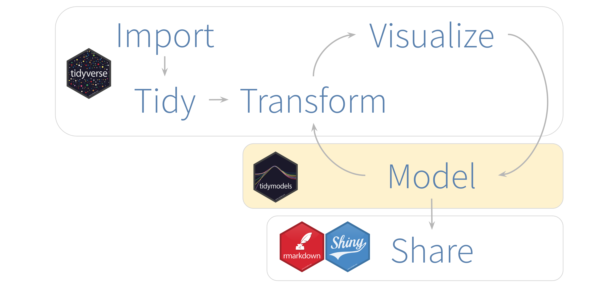
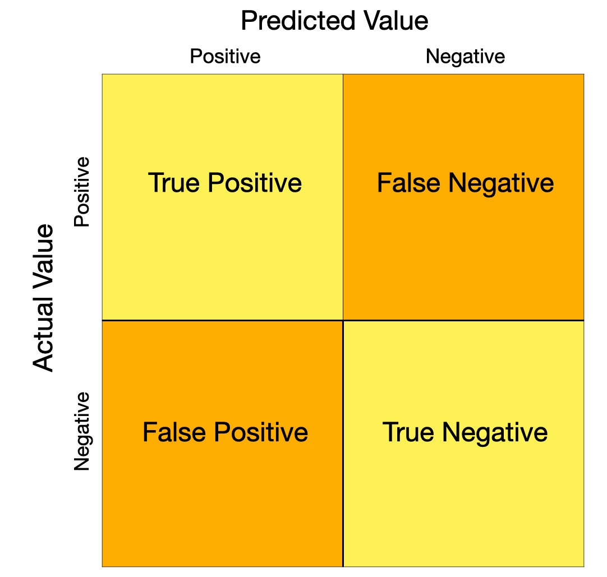

Background to tidymodels
For a long while Machine Learning in R has seemed like a poor substitute for python’s scikit-learn. R’s strengths have historically been in data manipulation and statistical analysis but lagged behind in terms of having a consistent and easily-useable API for machine learning.
This is where the tidymodels packages comes in. The aim of tidymodels is to mimic the consistency and simplicity of the tidyverse packages (dplyr, purrr, stringr etc), but for machine learning. It allows you to run your entire data science workflow without leaving the comfort of Rstudio, see bellow.

Lets meet the tidymodels packages.
There are few sub-packages that you should become familiar with in the tidymodels eco-system. Much like the tidyverse has dplyr, purrr, readr, stringr…etc tidymodels has rsamples, recipies, parsnip, tune… etc. This is what they all do in a nutshell.
rsample - Different types of re-samplesrecipes - Transformations for model data pre-processingparnip - A common interface for model creationyardstick - Measure model performance

I have heard the Rstudio community use the words ‘consious uncoupling’ in reffernce to splitting packages up into smaller ones which do a specific job and although this sounds slightly too similar to something out from a Gwenith Paltrow book for my liking, I think it describes the idea quite nicely.
ML Walkthrough
This walkthrough is inspired by the amazing blogs of julia silge from Rstudio, one of the creators of tidymodels. If you haven’t already, I highly recommend you check out her blog for more info. I was also heavily guided by this tidymodels blogpost - well worth checking out.
I’ll be using iris dataset that comes pre-loaded with tidyverse, so that we can focus on the methods rather than the data and so that no one has an excuse not to follow along. In future blogs, i’ll explore other data sources.
iris %>% head(n = 5)
## Sepal.Length Sepal.Width Petal.Length Petal.Width Species
## 1 5.1 3.5 1.4 0.2 setosa
## 2 4.9 3.0 1.4 0.2 setosa
## 3 4.7 3.2 1.3 0.2 setosa
## 4 4.6 3.1 1.5 0.2 setosa
## 5 5.0 3.6 1.4 0.2 setosa
Alight, enough talk, lets dive in.
We use rsample to split into training and testing set, much like ‘train_test_split’ from sklearn.model_selection in python. This returns a split object, which prints the number of rows in the train, test set and overall rows. The training and testing data can be accessed pretty easily as follows
library(rsample)
iris_split <- rsample::initial_split(iris,prop = 0.7,strata = Species)
## <Analysis/Assess/Total>
## <105/45/150>
iris_train <- training(iris_split)
iris_test <- testing(iris_split)
## Sepal.Length Sepal.Width Petal.Length Petal.Width Species
## 1 5.1 3.5 1.4 0.2 setosa
## 2 4.9 3.0 1.4 0.2 setosa
## 3 4.7 3.2 1.3 0.2 setosa
## 4 4.6 3.1 1.5 0.2 setosa
## 5 5.0 3.6 1.4 0.2 setosa
The recipies package will give us the tools we need for pre-processing our iris data.
We need to tell the recipe the predictor and predicted variable, we give it this information in formula form i.e Species ~ . where “.” is a shorthand for ‘all other variables’.
The we pipe this recipe into various steps, which do all sorts of good-practice ML pre-processing steps for you. Some examples include:
- step_zv() - removes variables with zero variance
- step_lag() - creates a lagged variable
- step_center() - centers variable to have mean of zero
- step_other() - pool infrequent categorical variables into “Other”
- step_scale() - creates a standard deviation of one
- step_corr() - removes highly correlated variables
- step_dummy() - creates dummy variables (one-hot-encoding) from categorical variables
and many, many others…
I find, not only are these convenient for data pre-processing, but crucially they help enforce best practice, and also encourage you to tune these pre-processing steps as part of your overall model tuning. Something which I feel is underrated and can hugely improve model accuracy.
The un-prepped recipie can be thought of as the general blueprint for reprocessing. ‘prepping’ it, preforms the reprocessing with the training set. So for example, It will use the training set to decide which variables in needs to drop through the step_corr() step. See the difference in outputs between iris_recipe and iris_recipe_prepped for the general and specific case.
Remember the test set must be transformed using the exact same pre-processing ‘learned’ from the training set. I.e if the step_corr() removed Petal.Length column from the data, this must be removed from test data, even if the correlation did not meet the threshold in the test set. Another example, the training set was centered and scaled by subtracting the mean of each column and dividing by the standard deviation. The test set is scaled using the training set mean and standard deviation.
So we bake() our test set using the recipe prepped on the training set
iris_test_baked <- iris_recipe_prepped %>%
bake(iris_test)
Time to actually train a model
There are often many different packages that fit the same type of model, with each one having slightly different interface and terminology. The beauty of tidymodels is that it provides a consistent set of functions and augments and then allows you to pick which package to use ‘behind the scenes’.
To make this concrete, training a random forest can be done with ranger and randomForst packages.
To set the hyper-parameter for the number of trees to build the ranger package uses nu.trees and randomForest uses ntree. Tidymodels eliminates this unnecessary complication, making it much simpler to switch between models. You can find a full list of models that tidymodels offer here
the rand_forest function generates your specification for the model, using things like:
- trees - The number of trees contained in the ensemble.
- min_n - The minimum number of data points in a node that are required for the node to be split further.
This is quite similar to the RandomForestClassifier class from the sklearn.ensemble module.
set_engine allows you to seamlessly move between the package used to fit the model, we could have written
set_engine("ranger") instead.
fit fits the model to the training data, with the formula telling the model which variables are predictors and predicted.
DONE!
To summarise, we split into a training and test set using rsample. We reprocessed our data using recipies and then trained a model using parsnip.
## Evaluating how well the model did
For this, we use yardstick.
First, lets use our model to predict the Species on our test set.
## # A tibble: 5 x 1
## .pred_class
## <fct>
## 1 setosa
## 2 setosa
## 3 setosa
## 4 setosa
## 5 setosa
Another big benefit tidymodels ecosystem is that its works so smoothly with the tidyverse.
The output of the predict() function is a tidy tibble.
We can now easily stick this next to our test set to see where the predictions were right and wrong
## Sepal.Length Sepal.Width Petal.Length Petal.Width Species .pred_class
## 1 4.6 3.4 1.4 0.3 setosa setosa
## 2 5.4 3.9 1.3 0.4 setosa setosa
## 3 5.7 3.8 1.7 0.3 setosa setosa
## 4 5.1 3.8 1.5 0.3 setosa setosa
## 5 5.1 3.7 1.5 0.4 setosa setosa
we can pipe this into metrics to get the overall accuracy which is #correctly classified/#total
## # A tibble: 2 x 3
## .metric .estimator .estimate
## <chr> <chr> <dbl>
## 1 accuracy multiclass 0.978
## 2 kap multiclass 0.967
You can also get back the predicted probability for each class
## Species .pred_setosa .pred_versicolor .pred_virginica
## 1 setosa 1.00 0.0000000 0.000000000
## 2 setosa 1.00 0.0000000 0.000000000
## 3 setosa 0.88 0.1133333 0.006666667

Which you need to build an ROC_AUC curve which plots the TPR and FNR for different thresholds. 
Thanks for sticking around, I hope I’ve convinced you that tidymodels is a reasonable substitution for other ML packages and can help simplify you workflow. Stay tuned for more tidymodelling blogs in future.